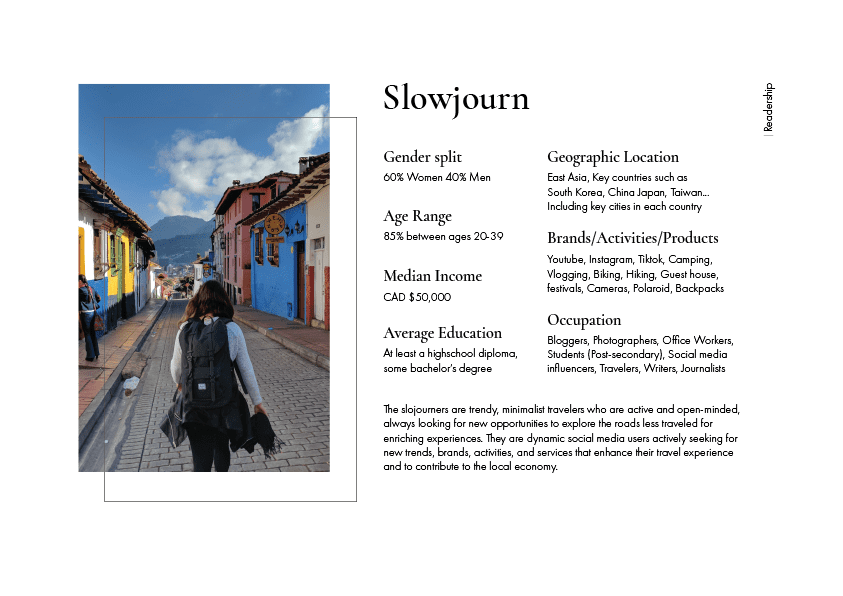
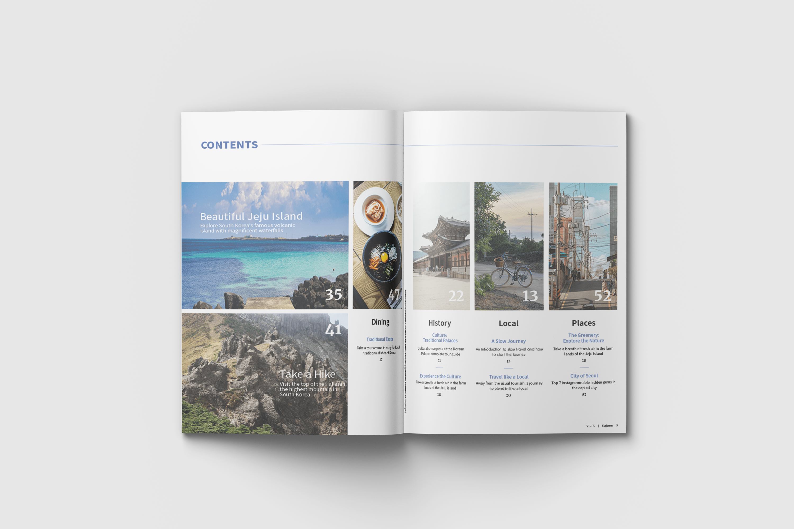
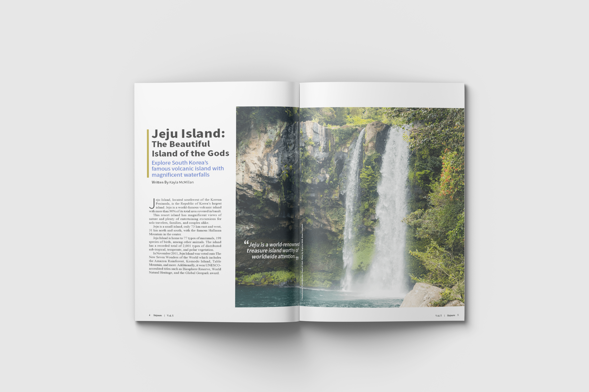
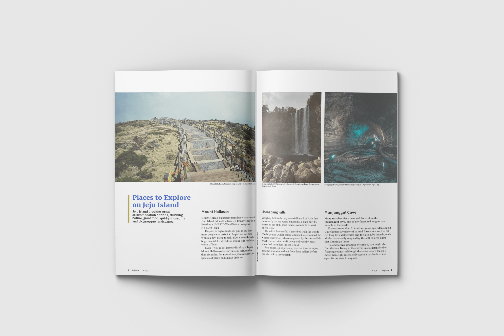
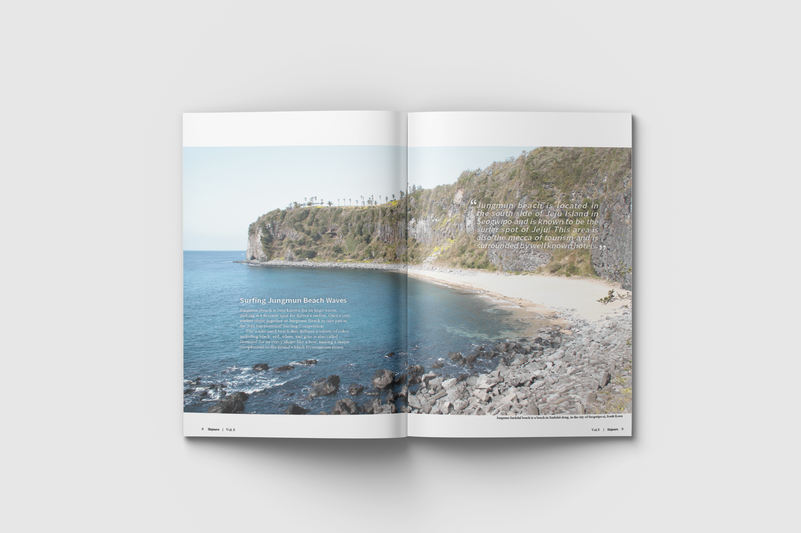
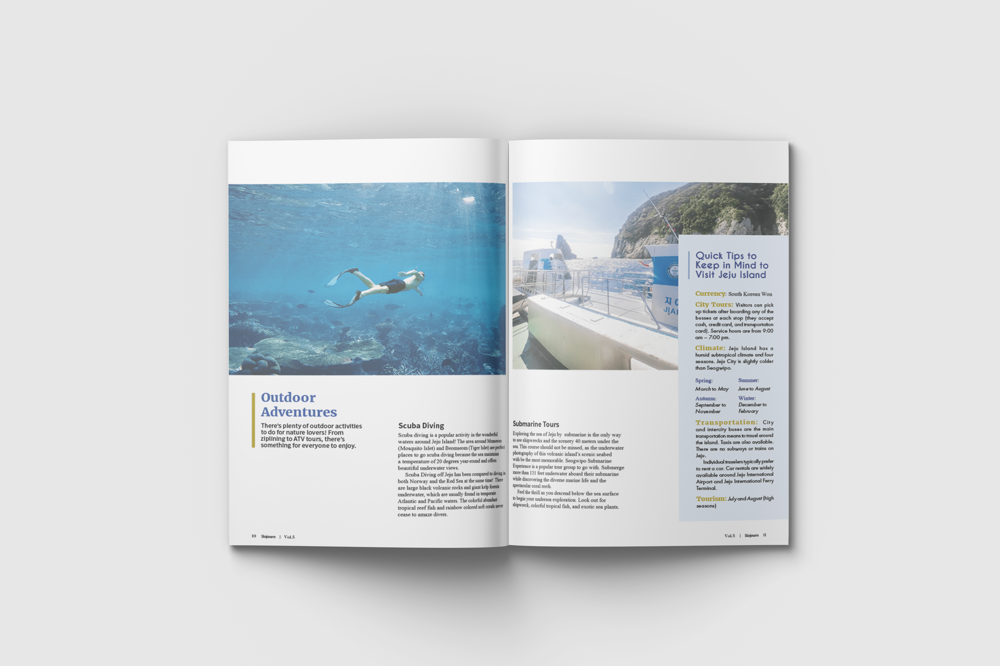
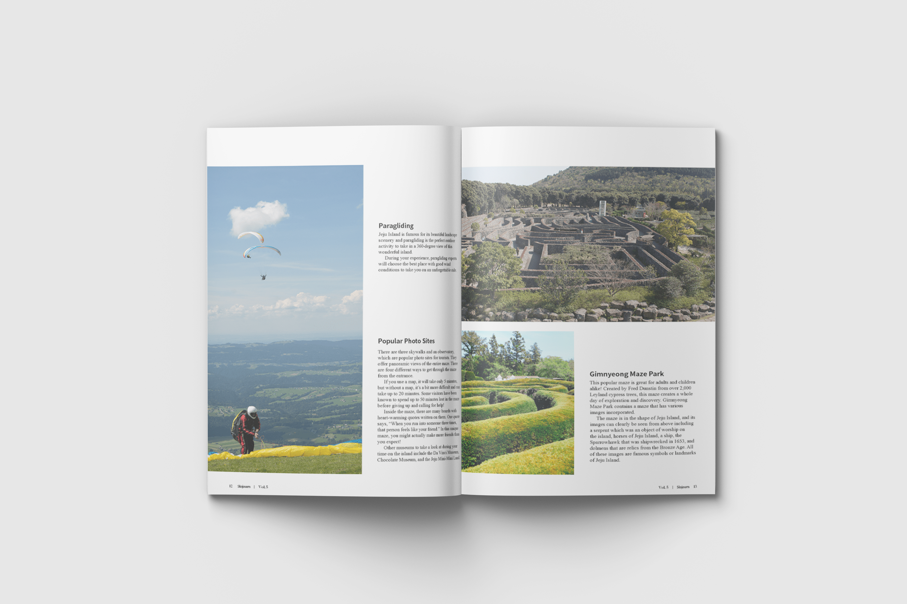
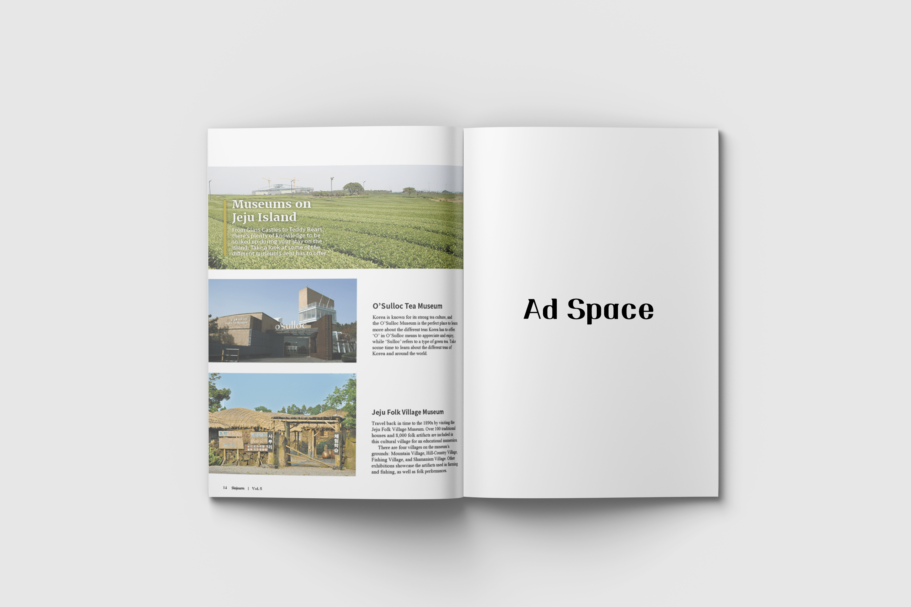
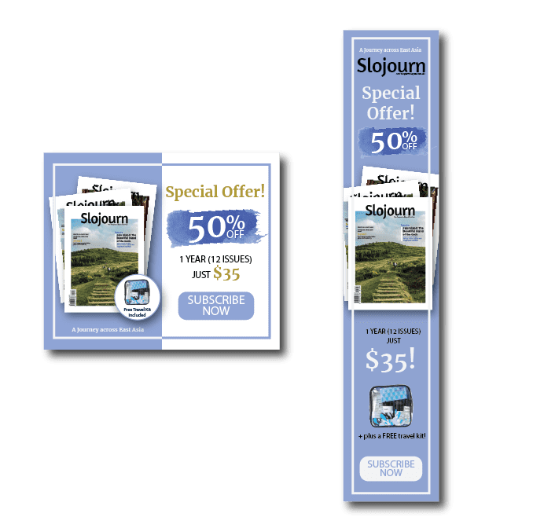
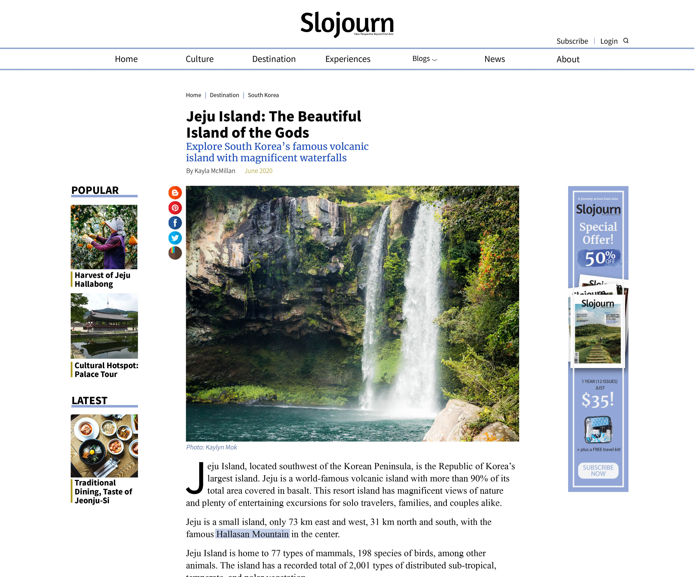

Overview
Slojourn is an ultimate travel guide for backpackers and seekers of pilgrimage who want new opportunities to explore the undiscovered paths of East Asia
roles
Brand identity, content research, print design
team
Individual
duration
June - August 2021
tools
Illustrator, photoshop
Ideation
Initial Idea
This project was developed across a senior level publishing class for magazine production. The task was to create a unique brand and develop a target readership for a magazine. The final product includes magazine feature story (print and digital) and subscription advertisements.
The publication I decided to design was a travel magazine, featuring South Korea. I wanted to design a clean, minimalistic magazine without packing the articles small and tight. As a travel magazine, I chose colour schemes of white, blue, black, and golden yellow as the brand colour; the main colour is blue as I wanted to express the nature, specifically the ocean.
Readership
I analyzed competitive and popular brands to define a realistic group of audience. Furthermore, I looked into the details such as activities, brands, and countries to specify the types of content the magazine will hold.
I defined my audience as 60% women and 40% men where slojourners are trendy, minimalist travellers who are active and open-minded, always looking for new opportunities to explore the roads less travelled for enriching experiences.
Potential and target reader persona
Editorial Mandate
Slojourn is designed to inspire young travellers to move away from the fast-paced environment and take a step back to explore new opportunities. The publication features iconic cities as well as the undiscovered paths as an ultimate travel guide for an exceptional travel experience.
design process
Magazine flatplan and overview of the content
Branding
The name Slojourn was derived from the word sojourn which means a slow journey. My publication holds the two meanings: slow journey and sojourn. The word sojourn defines temporary stay which is my brand’s context.
magazine design
Iteration
After the final submission, I reached out to the professor and discussed how I can develop the layouts as a real editorial magazine. The feedback I recieved was that I have a solid grid structure and good control of imagery, however the typography could have stronger impact to be newsstand ready. From here, I modified the layouts to emphasize the typography for a more impactful appearance. The changes I made are changing the hierarchy of the cover page, redesigning the sidebar, and adjusting some of the typography elements throughout the design.
Final Design
For the final layout, I kept the design clean and simple throughout by leaving enough white space and keeping a consistent layout. The san-serif font was chosen for a modern style with a few serif accents. I tried to present the images big and bold to allow viewers to capture the scenery. Furthermore, the advertisements and the web layout hold the same colour scheme for consistency.

The Cover of Slojourn Magazine
Table of Contents with different sections and image preview
Title page of the feature story
First content page of the feature story
Second content page of the feature story
Third content page of the feature story
Fourth content page of the feature story
Fifth content page of the feature story and the Advertisement Space
Digital Adaptations
Subscription advertisement for webspace
Postcard subscription front
Postcard subscription back
Web version of the Slojourn Magazine
Feature story web version of the Slojourn Magazine
conclusion
Reflection
The 10+ week-long editorial project has given me a journey from step 1 to the final product of a magazine/brand creation. It deepened my understanding of each process such as the order and the steps required before designing the layouts for the articles: Flat plan, Editorial Lineup, layout sketch, branding.